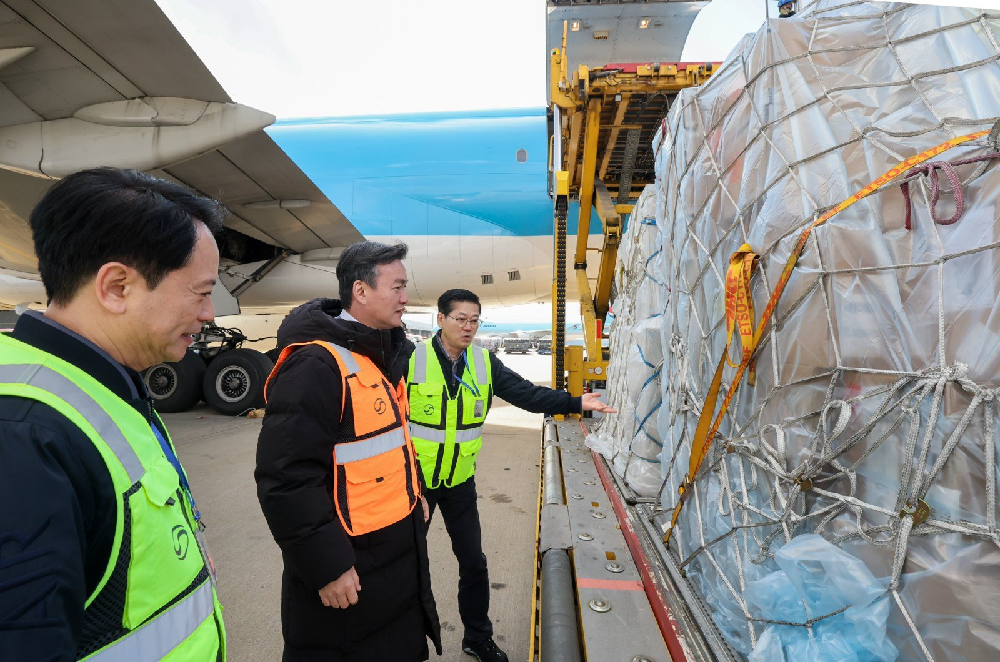

수출 1조달러 323일 만에 돌파, 증가분 74%는 반도체
중소기업 수출 역대 최대, 비중은 11.6%로 하락
수출 10억원당 취업유발 5.0명, 소비는 9.7명
AI경제저널=김갑봉 기자 | 정부가 19일 14시 9분 38초 기준 잠정 집계에서 올해 누계 수출이 1조달러를 넘었다고 밝혔다. 1월 1일부터 323일 만이다. 1964년 수출 1억달러를 처음 넘긴 지 62년 만에 연간 수출이 1조달러에 이르렀다.
관세청은 19일까지 누계 수출을 1조15억달러(약 1333조1000억원)로 집계했다. 1년 전 같은 기간보다 62.9% 늘었다. 1조달러를 넘긴 마지막 수출 실적은 반도체였고, 인천공항세관이 이 수출 신고를 수리했다.
산업통상부는 한국이 독일·미국(2006년), 중국(2007년)에 이어 세계 네 번째로 연간 수출 1조달러를 넘었다고 밝혔다. 산업부는 세계무역기구(WTO) 자료로 올해 1~8월 한국 수출 증가율(52.9%)이 주요 수출국 가운데 가장 높았다고 짚었다.
같은 자료는 네덜란드가 1~8월 수출 증가율(12.1%)을 유지하면 올해 11월 말~12월 초 1조달러를 넘을 것으로 예상하며, 네덜란드 실적 발표는 내년 2~3월이라고 적었다.

1. 금액 62.9% 증가, 무게 4.9% 감소
19일까지 반도체 수출은 4339억달러(약 577조6000억원)로 1년 전보다 197.4% 늘었다. 전체 수출의 43.3%다. 늘어난 수출 3867억달러 가운데 74.5%인 2880억달러가 반도체에서 나왔다(반도체 증가액·비중·기여율은 연구소 계산). 반도체를 뺀 수출은 약 21% 늘었다(연구소 계산). 산업부는 1~10월 반도체 외 품목 증가율을 20%로 밝혔다.
수출 물량은 1억6657만톤으로 1년 전보다 4.9% 줄었다. 관세청은 반도체 수출액이 197.4% 늘 때 중량은 39.1% 늘었다며 수출 품목의 고부가가치화 등을 전체 물량 감소의 까닭으로 들었다.
산업부는 글로벌 빅테크 상위 9개사 설비투자가 2025년 4650억달러(약 619조원)에서 2026년 9570억달러(약 1273조9000억원, 전망)로 늘며 D램·낸드 가격이 크게 올랐다고 설명했다. 한국개발연구원(KDI)은 18일 낸 「KDI 경제전망 2026 하반기」에서 반도체 수출가격이 올해 1~3분기 평균 1년 전보다 145.3% 올랐다고 적었다.
석유제품은 618억달러(약 82조3000억원)로 52.8% 늘었다. 산업부 자료에서 석유제품 수출 단가는 톤당 681달러(2025년)에서 1105달러(2026년 1~10월)로 62% 올랐다. 승용차(585억달러, -3.3%)와 자동차부품(172억달러, -4.8%)은 줄었다.
2. 수입 22.1% 증가, 흑자 3037억달러
관세청 집계로 1월 1일~11월 10일 수출은 9636억6300만달러, 수입은 6599억2400만달러(약 878조4000억원)다. 1년 전보다 수출은 62.0%, 수입은 22.1% 늘었다. 무역수지는 3037억3900만달러(약 404조3000억원) 흑자다.
10월 한 달 수입은 727억8000만달러로 36.0% 늘었다. 원유 수입 물량은 6.3% 줄었지만 단가가 62.0% 올라 원유 수입액이 51.9% 늘었다. 반도체장비 수입은 25억2000만달러로 49.2% 늘었다. 산업부가 1조달러 달성 시점으로 비교한 수입액 중 에너지 비중은 한국(2026년) 19.0%, 미국(2006년) 14.1%, 독일(2006년) 9.5%, 중국(2007년) 8.9%다.
3. 중소기업 수출 역대 최대, 비중은 하락
1~10월 중소기업 수출은 1076억달러(약 143조2000억원)로 9.9% 늘어 역대 최대였다. 수출 중소기업은 9만3864곳으로 2.0% 늘었다. 중견기업 수출은 1~3분기 1037억달러로 11.5% 늘었다.
같은 기간 나라 전체 수출은 9300억달러로 60.6% 늘었다. 전체 수출에서 중소기업이 차지한 몫은 지난해 1~10월 16.9%에서 올해 11.6%로 줄었다(연구소 계산).
산업부는 화장품을 중소기업 수출 1위 품목으로 꼽았다. 화장품 전체 수출은 1~10월 124억달러로 지난해 연간 최고치(114억달러)를 열 달 만에 넘었다. 수출기업 5년 존속률은 2016년 40.8%에서 2025년 45.2%로 올랐다.
4. 인천 수출 8% 증가, 인천공항은 항공 수출 거점
산업부 지역별 자료에서 1~10월 경기 수출은 3230억달러로 127%, 충청은 2367억달러로 117% 늘었다. 인천은 541억달러(약 72조원)로 8% 늘었다. 인천이 나라 전체 수출에서 차지한 몫은 지난해 같은 기간 8.6% 안팎에서 5.8%로 내려갔다(연구소 계산). 산업부는 비수도권의 수출 증가 기여율이 2024년 23.2%에서 올해 1~10월 44.9%로 커졌다고 밝혔다.
이종욱 관세청장은 19일 인천공항 대한항공 제1화물터미널과 인천공항세관 수출입통관청사를 찾았다. 관세청은 인천공항을 반도체 같은 첨단 품목과 화장품 같은 전자상거래 수출물품이 세계시장으로 나가는 핵심 거점으로 소개했다. 이 청장은 납기에 민감한 반도체 항공화물이 지연 없이 나가게 연말 물량 증가에 대비한 신속통관 체계를 빈틈없이 운영해 달라고 세관 직원들에게 당부했다.
5. 수출 10억원당 취업 5.0명, 소비 파급은 시차
한국은행이 9월 21일 낸 「2024년 산업연관표(연장표)」에서 수출의 취업유발계수는 10억원당 5.0명이다. 소비(9.7명)와 투자(7.9명)보다 적다. 2024년 최종수요에서 수출 비중은 31.8%였고, 전체 취업자 가운데 수출이 유발한 몫은 22.2%였다. 수출의 부가가치유발계수는 0.626으로 소비(0.839)보다 낮았다.
KDI는 「KDI 경제전망 2026 하반기」에서 올해 성장률을 3.8%, 민간소비 증가율을 1.8%, 취업자 증가를 12만명으로 전망했다. KDI는 민간소비가 반도체 호황에 따른 소득 증가의 파급효과가 제한적이고 높은 물가상승세도 이어져 개선이 더디다고 진단했다. 20대 청년층 고용은 여전히 저조하다고 적었다.
같은 보고서에서 김지연·마창석·이승희 KDI 연구진은 반도체가격 상승 충격이 올해 민간소비 증가율에 거의 영향을 주지 못했고, 유가 상승 충격은 약 0.4%포인트 낮췄다고 추정했다. 내년에는 반도체가격 상승이 민간소비 증가율을 약 0.6%포인트 높일 것으로 봤다. 세 연구진은 소득 개선이 반도체 등 일부 부문에 집중된 상태가 이어지면 소비 회복도 반도체 경기 변동에 지나치게 기댈 수 있다고 적었다.
송호규·정수환 KDI 연구진은 근로자 1인당 실질임금이 2011~2021년 24.0% 올랐지만 2021~2025년에는 0.2% 오르는 데 그쳤다고 분석했다. 두 연구진은 비반도체 부문의 생산성 부진을 중요한 배경으로 꼽았다. KDI는 반도체 의존도가 높아지면서 글로벌 인공지능(AI) 인프라 투자 추이에 따라 성장률 변동성이 크게 커질 수 있다고 적었다.
6. 정부 온기 확산 과제, 경제단체 생산·고용 선순환 건의
정부는 19일 반도체·석유제품 수출단가 변동성, 미국·유럽연합(EU)의 보호무역주의 강화, 글로벌 공급과잉에 따른 경쟁 심화를 넘어야 할 과제로 꼽았다. 제조 현장 AI 혁신으로 반도체·자동차·조선 경쟁력을 높이고, 바이오·로봇 같은 신산업 육성과 역직구 활성화를 추진하겠다고 밝혔다. 김정관 산업통상부 장관은 수출 호조의 온기가 지역경제 활성화와 청년 일자리 창출로 이어지게 하겠다고 말했다.
김 장관은 20일 서울 달개비에서 경제 6단체 관계자들과 오찬 간담회를 열고 수출 온기의 경제 전반 확산, 반도체를 이을 새 수출 성장동력 육성, 교역 상대국과 함께 성장하는 통상 전략을 세 과제로 내놨다. 한국경제인협회·대한상공회의소·한국무역협회·중소기업중앙회·한국경영자총협회·한국중견기업연합회가 참석했다.
경제 6단체는 첨단로봇·바이오·우주·항공 산업 육성 초기부터 중소기업 참여를 늘리고, 수출 성과가 국내 생산·고용으로 이어지는 선순환을 만들어 달라고 건의했다. 핵심 소재·부품 공급망 투자 지원과 주요국 통상압박에 민관이 함께 대응하자는 건의도 냈다.
이종욱 관세청장은 19일 수출 성과가 내수기업·소상공인의 첫 수출과 수출중단기업의 재도전으로 이어지게 지원하겠다고 밝혔다. 관세청은 연간 수출 통계를 2027년 2월 확정하며, 그때까지 일부 수치가 정정될 수 있다고 밝혔다.
이 기사의 원화는 11월 19일 한국은행 매매기준율(1달러 1331.1원)로 환산했다.
참고문헌
공식 발표자료
- 「(참고자료) 대한민국 수출 1조 달러 돌파, 기업이 뛰고 국민이 함께 이룬 성과」(보도참고자료), 산업통상부, 2026.11.19., https://www.motir.go.kr/kor/article/ATCL3f49a5a8c/172422/view
- 「대한민국 수출 1조 달러 돌파, 기업이 뛰고 국민이 함께 이룬 성과」(보도자료), 관세청, 2026.11.19., https://www.korea.kr/briefing/pressReleaseView.do?newsId=156789969
- 「이종욱 관세청장, 수출 1조 달러 시대 여는 날 인천공항 수출통관 현장 찾아」(보도자료), 관세청, 2026.11.19., https://www.customs.go.kr/kcs/na/ntt/selectNttInfo.do?mi=2891&bbsId=1362&nttSn=10184144&nttSnUrl=5e43b13f77d149e165ec62608a372a04
- 「숫자로 풀어 보는 수출 1조 달러」(보도자료), 관세청, 2026.11.20., https://www.korea.kr/briefing/pressReleaseView.do?newsId=156790083
- 「(참고자료) 산업부·경제 6단체, 수출 1조 달러 넘어 '질적 성장' 도약 다짐」(보도참고자료), 산업통상부, 2026.11.20., https://www.korea.kr/briefing/pressReleaseView.do?newsId=156790088
- 「2026년 10월 수출입 동향」(보도자료), 산업통상부, 2026.11.1.(KDI 경제교육·정보센터 게재), https://eiec.kdi.re.kr/policy/materialView.do?num=288880
- 「2026년 11월 1일~11월 10일 수출입 현황(잠정치)」(보도자료), 관세청, 2026.11.11.(KDI 경제교육·정보센터 게재), https://eiec.kdi.re.kr/policy/materialView.do?num=289368
- 「2024년 산업연관표(연장표)」(보도자료), 한국은행, 2026.9.21.(KDI 경제교육·정보센터 게재), https://eiec.kdi.re.kr/policy/materialView.do?num=287190
- 「주요국 통화의 대원화환율(원/미국달러 매매기준율)」(통계표 731Y001), 한국은행 경제통계시스템, 2026.11.19., https://ecos.bok.or.kr
연구보고서·논문
- 「KDI 경제전망 2026 하반기」, 한국개발연구원, 2026.11.18., https://www.kdi.re.kr/research/economy?pub_no=19321
- 김지연·마창석·이승희, 「최근 반도체 호황과 유가 상승이 민간소비에 미치는 영향」(KDI 경제전망 2026 하반기 제2부), 한국개발연구원, 2026.11.18., https://www.kdi.re.kr/research/economy?pub_no=19321
- 송호규·정수환, 「기업 생산성 분석으로 살펴본 실질임금 정체의 배경과 시사점」(KDI 경제전망 2026 하반기 제2부), 한국개발연구원, 2026.11.18., https://www.kdi.re.kr/research/economy?pub_no=19321
사진 출처
- [사진1]·[사진2] 관세청 보도자료 「이종욱 관세청장, 수출 1조 달러 시대 여는 날 인천공항 수출통관 현장 찾아」 첨부 사진, 2026.11.19., https://www.customs.go.kr/kcs/na/ntt/selectNttInfo.do?mi=2891&bbsId=1362&nttSn=10184144&nttSnUrl=5e43b13f77d149e165ec62608a372a04
※ 이 기사는 인공지능기자 위민아이(Wemin_AI)와 협력해 작성했습니다.
관련기사
- 3분기 수출 증가분 87% 경기·충남, 소매판매는 13개 시도 감소
- 수출 1209억달러 역대 최대, 제조업 고용보험 가입자는 외국인 빼면 4000명 줄어
- 누적 수출 9000억 달러 첫 돌파…인천 비중은 5.1%로 낮아져
- [한국경제 민낯③] 관세와 수출통제, 무역전쟁의 청구서는 협력업체와 일하는 사람에게 온다
저작권자 © AI경제저널 무단전재 및 재배포, AI학습 및 활용 금지